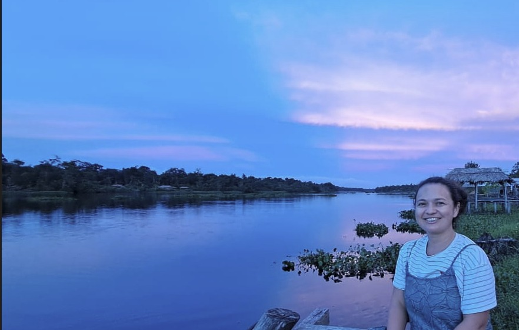
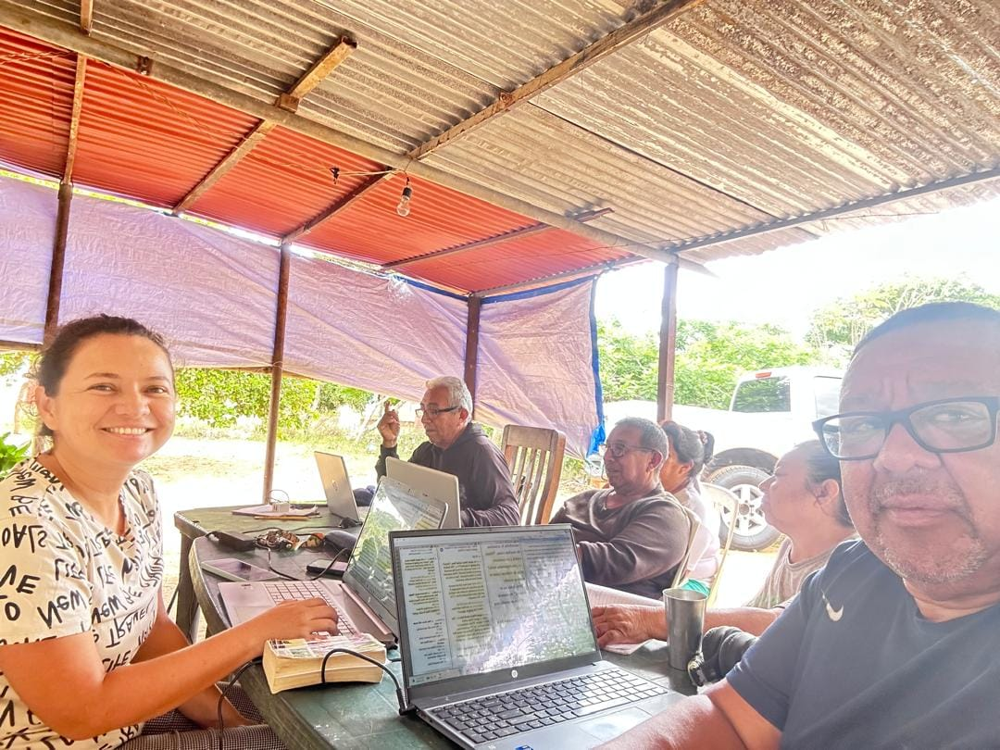
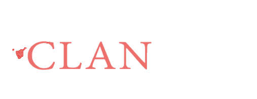
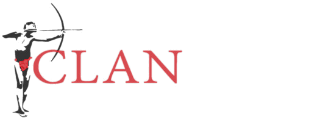
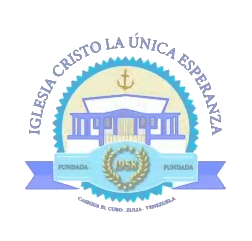
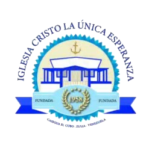

Misionera
Que los kari'ñas
lean a Dios
en su idioma
Soy Eliset Gómez Quintero. Trabajo en la traducción de la Biblia al idioma kari'ña y acompaño como consultora la traducción al warao.
El trabajo
Traducir no es cambiar palabras de idioma
Es encontrar, en una lengua que nunca ha tenido Escritura, la manera exacta de decir lo que el texto dice. Verso por verso, con hablantes kari'ñas que revisan cada elección hasta que suena como suya y no como una traducción.
Ahora mismo estamos terminando de revisar el evangelio de Marcos para empezar con Mateo. El proyecto se lleva a cabo a través de CLAN, la Asociación Civil de Capacitación Lingüística, Antropológica y Alfabetización Nativa, que desde hace años publica Escrituras en lenguas indígenas venezolanas.

-
Misionera entre la etnia kari'ña
Vida y trabajo dentro de las comunidades, no visitas.
-
Traducción de la Biblia al kari'ña
Marcos en revisión final; Mateo, a continuación.
-
Consultora en traducción warao
Acompañando a otro equipo en su propia lengua.
Para quién es esto
Un pueblo de treinta y tres mil personas
-
33.824
kari'ñas en Venezuela. El tercer pueblo indígena del país, en Anzoátegui, Bolívar, Monagas y Sucre.
-
Caribe
La familia lingüística del kari'ña. Nada que ver con el castellano: otra manera entera de construir el sentido.
-
En retroceso
Glottolog clasifica la lengua en desplazamiento: cada generación la habla menos que la anterior.
Cifras del XIV Censo Nacional de Población y Vivienda (INE, 2011), la última medición oficial disponible. El warao, la otra lengua en la que trabajo, es una lengua aislada: no se le conoce parentesco con ninguna otra del mundo. La hablan los 48.771 warao del delta del Orinoco.
Acompáñame en oración
Diez motivos concretos
Si vas a orar por este trabajo, que sea por algo preciso. Esto es lo que hay sobre la mesa hoy.
- Por el trabajo de traducción entre los kari'ñas. Estamos terminando de revisar el evangelio de Marcos para iniciar con la traducción del evangelio de Mateo.
- Que la Palabra de Dios siga corriendo e impactando las comunidades kari'ñas.
- Que toda la traducción se pueda colocar en audio, para que las personas que no saben leer puedan escuchar la Palabra de Dios en su idioma.
- Por la formación de líderes cristianos: en las comunidades hay mucho sincretismo, y a través del conocimiento de la Palabra de Dios puedan entender claramente el Evangelio.
- Por los traductores kari'ñas: salud para ellos y sus familias.
- Por provisión del Señor, para que se puedan realizar todos los proyectos de traducción.
- Por sabiduría para hacer el trabajo como Dios quiere que se haga.
- Que más personas se sumen al proyecto de traducción.
- Que todos sigamos creciendo en el conocimiento de nuestro Señor a través de la profundización en su Palabra.
- Por la organización CLAN, a través de la cual se lleva a cabo el proyecto: sabiduría para gestionar todo el trabajo que tienen.
Cómo apoyar
Sostener el trabajo
Toda ofrenda se destina al proyecto de traducción. Hay dos vías, una en Venezuela y otra en Colombia.
Los datos no se muestran de entrada, para que no queden expuestos a los rastreadores automáticos de la web.
El trabajo se realiza a través de



